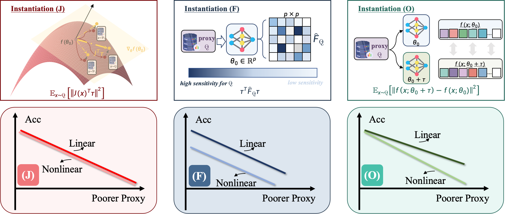
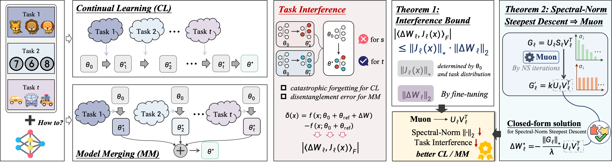
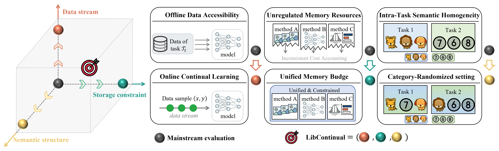
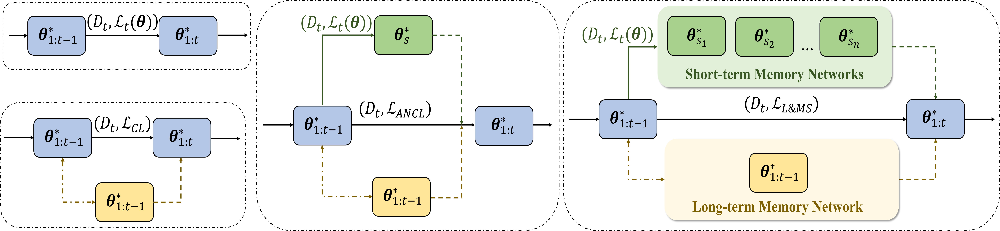
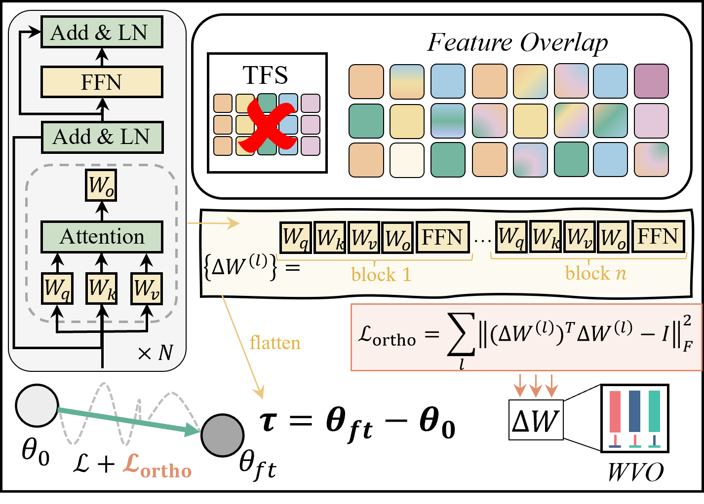
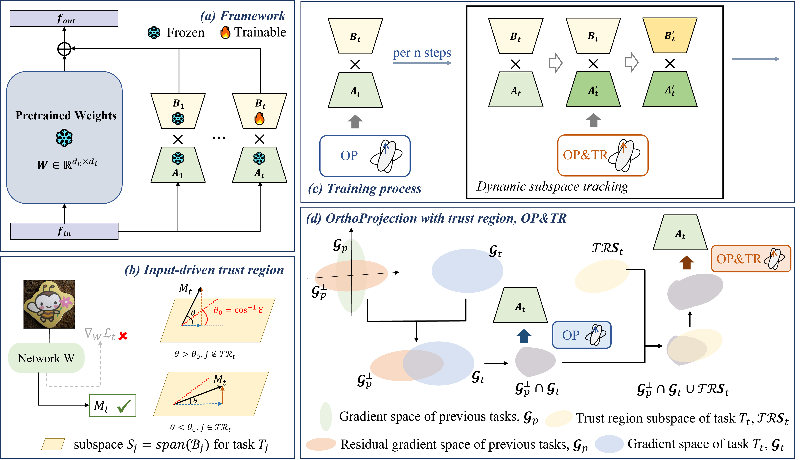

A Spectral Framework for Universal Proxy Regularization in Model Merging
arXiv:2611.17728, 2026
Academic Homepage
First-year Ph.D. Student
Email: lshangge@smail.nju.edu.cn
I am currently a first-year Ph.D. student in the School of Intelligence Science and Technology at Nanjing University, supervised by Prof. Wenbin Li. I am a member of the Reasoning and Learning Research Group, led by Prof. Yang Gao. Before transferring to the Ph.D. program through the integrated Master's–Ph.D. track, I studied as a master's student in the School of Computer Science at Nanjing University. Previously, I received my bachelor's degree from Beijing Institute of Technology in 2024.
My research interests focus on the following directions:
Our preprint, A Spectral Framework for Universal Proxy Regularization in Model Merging, is now available on arXiv.
I started my Ph.D. studies at the School of Intelligence Science and Technology, Nanjing University.
Our preprint, When Muon Meets Task Interference: A Spectral Perspective on Continual Learning and Model Merging, is now available on arXiv.
Started my internship at the Large Model Technology Innovation Department of Ant Digital Technologies!
Our CVPR 2026 paper on task arithmetic was featured on Hugging Face Daily Papers.
Our paper, A Continual Learning Framework with Long-term and Multiple Short-term Memory Networks, was accepted by Neural Networks.
Our paper, Understanding and Enforcing Weight Disentanglement in Task Arithmetic, was accepted by CVPR 2026 as an oral presentation.

arXiv:2611.17728, 2026


# Equal contribution. * Corresponding author.

Neural Networks, 2026

IEEE/CVF Conference on Computer Vision and Pattern Recognition, 2026

ACM MM Workshop on Continual Learning, 2025
Email
lshangge@smail.nju.edu.cn
Address
Shangge Liu, School of Intelligence Science and Technology, Nanjing University, Suzhou Campus, Suzhou, China.